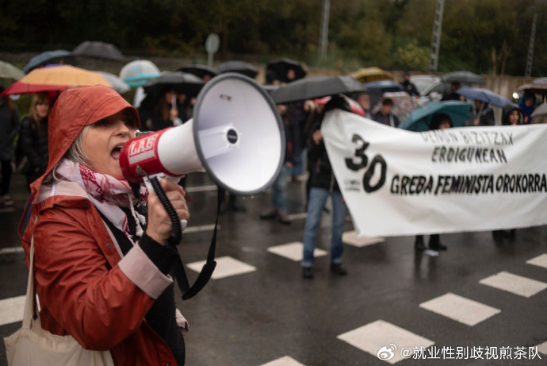
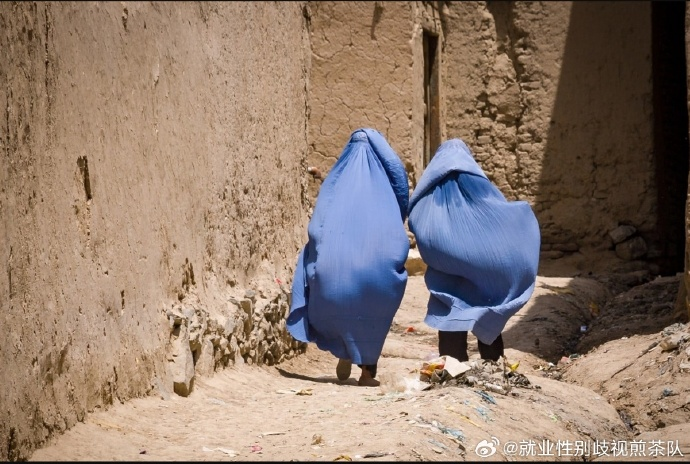

海外2023年12月｜“我不得不离开”


【西班牙】西班牙巴斯克地区工人举行总罢工以争取公共医疗服务
近期，西班牙巴斯克地区的工会和妇女运动举行了一场明确的女权主义总罢工。工人们正在为公共社区护理系统而罢工——该系统要求确保护理工作得到高薪并得到适当的支持。Jule Goikoetxea是巴斯克地区领先的女权主义作家和活动家之一，她讲述了这次历史性的罢工及其发生的过程。
新自由主义资本主义希望将护理，特别是老年护理商品化，因为我们的社会越来越老龄化，因此资本可以赚很多钱。在巴斯克地区，他们正在将一切私有化：住宅护理、医疗保健、教育。这直接影响到女性，因为当健康或教育的任何方面私有化时，女性的无偿工作量就会增加。当人们因为没有床位而被赶出医院时，谁来照顾他们？女性。当学校食堂私有化时，孩子们去哪里——谁为他们做饭？妇女在家里。
通过这一私有化进程，他们使妇女陷入贫困，并将国家的义务强加给妇女。教育和医疗保健成为公共服务，这是女权主义二十世纪的成就之一。但二十一世纪开始，他们已经开始将这一切私有化。
我们要求公众和社区的关怀。首先，“公共关怀”是指反对一切新自由主义的私有化。在这里，我们说我们想要女权主义的公共结构，而不是殖民的、父权的结构，是确保终生护理作为公共部门的一项权利和义务的结构。在墨西哥，他们已经将护理问题列为一项公共权利。
其次，“社区关怀”是指妇女为创造社会所做的一切：不仅是不稳定的工作，不仅是国家应该承担的责任，而且是妇女在家庭或社区中所做的一切。这是指男性必须开始关注的事情，因为统计数据总是相同的：男性不从事无偿工作，而全世界85%的无偿工作是由女性完成的。
这就是需求的“社区”方面的用武之地。这不仅仅是国家必须建立确保从出生到死亡的护理的机构，而且擦你女儿的屁股或擦你祖母的屁股的工作也一样要由男人来完成。
（来源：Jacobin；翻译：白纸）

【美国】拍电影的预算不够，艾娃·杜威内（Ava DuVernay）找到了一种新方法
当导演艾娃·杜威内选择将广受好评的2020年非小说类畅销书《种姓》搬上大银幕时，她的疑虑就开始了。
有人说，伊莎贝尔·威尔克森揭露的种族主义文化历史是无法拍成电影的。饰演主角的安佳纽·埃利斯-泰勒 (Aunjanue Ellis-Taylor) 还没有足够大的明星范来主演一部耗资3800万美元的电影。影院的观众们会因为这部令人心碎的电影而退缩，因为这部戏剧迫使他们面对特雷冯·马丁、大屠杀、奴隶制和印度对达利特人的虐待。
但杜威内认为她的电影需要制作，她不会让金钱改变她的愿景。这意味着她要找到一种新的电影融资方式，然后她做到了。
影片《起源》将于周五在纽约和洛杉矶上映，并于一月在全国上映，它得到了一个意想不到的来源的支持：慈善家。为制作该电影而开出支票的基金会和捐助者——包括福特基金会、梅琳达·弗伦奇·盖茨 (Melinda French Gates)、劳伦·鲍威尔·乔布斯 (Laurene Powell Jobs) 和 23andMe首席执行官安妮·沃西基 (Anne Wojcicki)资助的非营利组织，以及一些热心公益的NBA明星——他们并不期望他们的投资能够获得经济回报，他们希望产生社会影响。
“我想说99%的人都不会看好这部电影，因为它不守规矩，”2014年执导过奥斯卡提名民权剧《塞尔玛》的杜威内说道，关于一个非常艰难、密集、没有吸引力的主题。然后主角就在悲伤中幸存下来。这听起来不像漫威电影。怎样才能让人们进来呢？”
（来源：华盛顿邮报；翻译：白纸）
【英国】他跟踪他的“灵魂伴侣”;她生活在恐惧之中: 前警察埃里希·贝内特因跟踪罪被判服刑5年
周五，一名妇女在法官面前，解释了她和孩子是如何离开家，在亲人家的沙发上借宿几个月，直到他们找到一个永久的新家，这一切都是因为他们觉得不安全。她甚至因害怕而不敢公开自己的名字。
该妇女在和一个交往了9周的男人分手后，受到了威胁——她的车被锁住了，四个轮胎被划破了，她的家庭安全系统被破坏了。
蒙茅斯县助理检察官梅勒妮·法尔科(Melanie Falco)说，在海亮镇(Sea Bright)警察部队工作了20年的埃里希·a·贝内特(Erich a . Bennett)在分手后威胁那名女子，扬言“要割下她的阴蒂，划开她的脸”。
在该女子在社交媒体上屏蔽了他之后，贝内特创建了一个虚假的Facebook个人资料，并通过其称呼她为猪，还有更糟糕的事情。
这位只愿透露姓名首字母的受害者告诉法官，与贝内特的行为给她的家庭带来的强烈不安感相比，修车和搬家的成本甚至不足挂齿。
“最大的影响是我们每天感受到的恐惧，”她告诉高等法院法官约瑟夫·w·奥克斯利(Joseph W. Oxley)。
在检察官法尔科的敦促下，奥克斯利法官判处这位前警官五年监禁。
“我们从小就告诉我们的孩子，警察是好人，他们应该保护我们，保证我们的安全。”检察官说，“被告作为一名警察，本应该保护我们免受像他这样的人的伤害。”
奥克斯利法官表示，除了服刑外，贝内特还被永久剥夺了工作和拥有枪支的权利，并被永久禁止与受害者有任何接触。
现年47岁的贝内特在9月份承认了跟踪、刑事恶作剧、妨碍逮捕自己和盗窃电脑的罪名。检方表示，这起电脑盗窃案事关他在值勤期间违规使用警方电脑，查找前女友的朋友和家人的信息，其中包括他嫉妒的男人。
检方说，贝内特以想购买摩托车头盔的名义联系了其中一名男子，试图找到他的住处。
贝内特坐在法庭的陪审席上，穿着黄色的囚服。受害者说话时，他才把目光从她身上移开。
轮到他向法官讲话时，贝内特说:“当我见到她时，我感觉站在了世界之巅。她使我快乐。我真的觉得自己找到了灵魂伴侣。”
“当她和我分手时，我无法接受，”他说。
贝内特告诉法官，他一生中大部分时间都在与抑郁和焦虑作斗争。“去年1月，我真的精神崩溃了。”
今年1月，贝内特被送往蒙茅斯医疗中心(Monmouth Medical Center)接受危机治疗后被捕入狱。早些时候，一名小银镇(Little Silver)的警官报告说，他在执勤时开着一辆Sea Bright巡逻车经过受害人的家。
检察官办公室后来同意让贝内特出狱，这样他就可以参加佛罗里达州的一个康复项目。
贝内特从戒毒所出来后被允许保持自由，直到他犯了一个错误，违反了他出狱时最重要的条款之一———不得与受害者有任何接触。
7月，贝内特订阅了受害者的YouTube频道，此举不仅导致他被送回监狱，还让检察官收回了一笔丰厚的认罪协议，这样他就不必入狱了。
“他不应该这么做，”辩护律师米切尔·安塞尔(Mitchell Ansell)在谈到贝内特登录YouTube频道时说。
尽管如此，安塞尔说，贝内特在监狱里待了将近6个月，这对他的罪行已经足够惩罚了。他指出，在那之前，贝内特的职业生涯堪称典范，没有任何前科。
“恕我直言，我认为这已经足够了，”安塞尔在谈到贝内特入狱的时候说。
法官奥克斯利不同意。“我不知道他是否做了足够的努力来解决这些问题，和他的恶念，”奥克斯利说，并补充说他不相信贝内特不会再犯。
“这是对公众信任的违背，”法官说。
奥克斯利命令贝内特向受害者支付4780美元的赔偿金，以补偿他对她财产造成的损害。
奥克斯利说:“这将是对物理损失的补偿。”
“我不认为有多少钱可以考虑补偿这个受害者在漫长的时间里所遭受的恐怖，”法官说。“没有任何赔偿能够让她回到噩梦开始前的状态，法庭也无法让她恢复到不幸的事情开始发生前的那种平静。”
（翻译：晴晴子）
【美国】一名女子逃离父母与表弟的包办婚姻，并加入了空军:“我不得不离开”
19岁时，哈姆娜·扎法尔(Hamna Zafar)知道，除非她同意和巴基斯坦的表弟的包办婚姻，否则她将失去家人。然而，由于她不愿意放弃建立自己生活的美国梦，这个孝顺的女儿叛逆了，选择逃离美国，在美国空军服役。
“我总是想着我的父母。我总是想着我的家人。我总是想着我的姐妹们，”23岁的扎法尔告诉《人物》杂志。“但那天晚上我想到了我自己。”
她知道，迈出这一步，她将失去她在巴基斯坦的大家庭，她的父母永远不会原谅她，并拒绝她与两个心爱的妹妹联系。
扎法尔在马里兰州的一个移民家庭长大，她从来没有想过自己会走这条路。扎法尔是一个听话的孩子，成绩很好；从不远游，多年来照顾患有自闭症的妹妹，并计划在大学毕业后开始一份事业。如今，她作为一名空军安全卫士，日日保护基地。
扎法尔说，小时候，她的父母并不介意她受教育，但坚持认为她最终会安顿下来，嫁给他们选择的丈夫，做一个妻子和母亲。
“我只是希望我的家人能适应美国的文化，”她说。“从小到大，他们从来没提过包办婚姻。”
2019年，当这位大一新生去巴基斯坦参加家庭旅行时，一切都改变了，她发现自己是来参加订婚派对的。
“我以为这是一次普通的巴基斯坦家庭旅行。然后我看到了珠宝和裙子，”扎法尔说。“当时我快20岁了，他们想让我知道我已经订婚了，不能再看别的男人了。”
虽然她的表弟对他们的订婚似乎很高兴，但她分享说，在整个煎熬过程中，她陷入了困境，几乎没有和她的未婚夫说过话。
“我试着吞下那颗药丸，”扎法尔说。“我试图理解我到底发生了什么。”
庆祝活动和拜访结束后，一家人回到了美国，扎法尔试图与她的母亲讲道理。
“我的父母非常传统，从来没有适应过美国文化，”扎法尔说。“这就是为什么他们带我去巴基斯坦，让我订婚。”
当她的父母得知她打算参军以逃避自己的命运时，扎法尔惊慌失措。“我完全依赖他们，”她说。“但我知道我必须离开。”
在一名海军征兵人员的帮助下，她逃了出来，住进了一家便宜的旅馆，直到她能申请加入。但新冠疫情和其他担忧让她重新审视了自己。
扎法尔说，当她的大学朋友奥斯汀建议她来和他和他的家人住在一起时，她又累又穷，几乎准备答应父母的要求。她一直和家人住在一起，直到获得副学士学位，最终决定在2022年入伍。
“她是如此娇小和谦逊，你忍不住想要保护她，”克劳迪娅·巴雷拉(Claudia Barrera)说，收养扎法尔后，她现在称她为妈妈。“当我们送她去基础训练时，她看起来好小，我哭了起来。(我丈夫)说，‘她个子很小，但很强壮。’”
飞行员扎法尔在养父母的陪同下接受了基础训练。扎法尔分享说，当开始为空军训练时，她面临着文化冲击。
“我完全不知道新兵训练营会是什么样子。我看了几段视频，让自己对即将发生的事情有个大概的了解。”“这绝对是一次大开眼界的经历。”
以前从来没有人吼过她，她一直认为自己做错了什么可怕的事情。
扎法尔说:“他们实际上是被雇佣来对你大喊大叫的，所以这真的很难。”“你正在努力适应一个不同的环境，并被告知要做什么。这绝对是可怕的。”
身高5英尺2英寸的扎法尔承认，对身体的要求也同样艰难，因为她经常面临身体耐力的挑战。她不停地行军，在泥里爬，把自己的身体推到极限，她说:“你的身体会习惯这些体育活动。你的思想会比你的身体先放弃。”
“你需要控制你的心态，”她谈到她所学到的教训时说，“因为你的思想总是比你的身体更强大。”
现在，扎法尔在她与同事之间建立的纽带中找到了力量。
罗伯特·斯图尔特中士今年早些时候开始在新墨西哥州的科特兰空军基地与扎法尔一起工作。他说他被她的故事深深打动了，并对她的进步印象深刻。
“我告诉她，她只是需要有人相信你，”39岁的斯图尔特说，他的妻子也为扎法尔提供支持。“她和其他飞行员不一样。她的风度和故事——她就像一块宝石。”
对扎法尔来说，最困难的时刻是从基础训练毕业时，想让家人看到她所取得的成就。她说，曾多次试图联系家人，但他们没有回应。
“我希望他们为我感到骄傲，并与他们分享，”扎法尔说。“我真的想让他们看到，他们的女儿有这么大的潜力。”
但仍然有人关心她:养父母一家表达了他们的骄傲。
“我希望他们意识到他们把孩子置之不理所犯的错误，”养母贝雷拉谈到扎法尔的家人时说。“扎法尔会成为她想成为的人。这就是美国的美丽之处——你可以选择和谁结婚，选择过什么样的生活。”
（翻译：晴晴子）

【巴勒斯坦】在约旦河西岸的致命袭击中，巴勒斯坦妇女奋力保护自己的文化
出于安全考虑，这位单身母亲不愿透露自己的真实姓名。她必须在早上的通勤途中通过多个以色列检查站。在10月7日哈马斯发动致命袭击之前，他们只检查了她的身份证，现在连手机都要检查。
随着上周临时停火的结束，在被围困的加沙地带，对剩余基础设施和平民的致命袭击如雨点般落下。由于全球对约旦河西岸的关注很少，巴勒斯坦领土一直受到以色列定居者、士兵和空袭的持续轰炸。
哈娜是Darzah的首席工匠，Darzah是一个非营利性组织，致力于保存传统的tatreez艺术形式，这是一种流传了几个世纪的女性刺绣风格。
她每天从Zababdeh出发，到约旦河西岸周边村庄的工匠同行那里收集布料和针线，她目睹了人们在检查站遭到以色列士兵的殴打、逮捕和流血。
她在接受《独立报》采访时表示:“我的旅途中总是有士兵的身影。”“士兵们让我们下车，然后让我们把手机给他们看。他们查看我们的电报和社交媒体以及我们发布的内容。
“如果他们在你的手机上看到任何关于加沙、杰宁或纳布卢斯发生的事情的新闻，他们就会审问你。”
Tatreez是流传了几个世纪的传统艺术形式。
尽管前路艰险，哈娜还是决心让组织的工作继续下去。
“我在做我曾祖父母做过的事情，”她说。“我教我的孩子们如何做tatreez，我将继续这样做。”
谈到自去年10月以来不断升级的侵略，Darzah的执行主任Janette Habashi博士说:“他们的目标是摧毁巴勒斯坦的精神。当然，我们感到失败了。他们夺走了我们的一切。
“这是回馈社会的唯一途径。当你知道有这么多的痛苦和折磨时，你不能坐着。”
但在耶路撒冷老城长大的哈巴什医生承认，她非常担心这些妇女的安全，尤其是哈娜，因为她必须乘坐公共交通工具去取物资并把布料送到她们手中。
“这个地方太疯狂了，没有安全可言。我们在杰宁难民营的一个工匠的家被毁了。”
当被问及如果手术被迫停止会发生什么时，哈巴什医生情绪激动。“那将是一场灾难，”她说。
“我们抗拒。我们一直在抵抗，但这并不意味着我们必须用武器抵抗。”“我们将用我们的传统进行抵抗。我们将继续tatreez，我们将缝合加沙和杰宁的名字。”
巴勒斯坦人说，以色列军队在冲突期间将他们的象征夷为平地，其中包括一座纪念2022年被以色列士兵枪杀的巴勒斯坦记者希琳·阿布·阿克勒(Shireen Abu Akleh)的神龛。
Darzah的执行董事Janette Habashi博士说，她担心工匠的安全。
“这是一场反对身份的战争，”杰宁文化部主任哈宁·易卜拉欣(Haneen Ibrahim)说。“他们想要根除和摧毁巴勒斯坦人的身份。”
今年3月，易卜拉欣的哥哥被以色列军队杀害。她说，当她看到哥哥的照片挂在杰宁的“烈士广场”上时，她的悲伤被骄傲所缓解。但上个月广场被毁后，失去丈夫的痛苦再次降临到她身上。
在整个杰宁，曾经矗立着高大雕像和纪念碑的地板上散落着瓦砾和金属碎片。
杰宁马，al-Hissan，是一件受欢迎的雕塑，建于2003年，当时以色列对该市进行了致命的入侵。这匹马是由失事汽车的零件、拆除房屋的金属以及一辆救护车的面板制成的，这辆救护车在一次罢工中被毁，导致救护车司机死亡。
但最近几周，它也被摧毁了。
这匹马站在杰宁难民营的一个主要入口附近，面对海法市，代表着“难民重返家园的梦想”，但当地人说，它在10月29日被以色列军队移走了。
易卜拉欣表示:“这匹马就像是2002年那场战斗的目击者。”
杰宁妇女联盟委员会主任Wafaa Afeef Zakarni说:“以色列军队的目标是人、树木和石头。巴勒斯坦人民已经被占领了75年。”
“这些女性面临的心理和经济痛苦是无法想象的。当她们的丈夫被关进监狱、被杀害、或被禁止在巴勒斯坦工作时，巴勒斯坦妇女就会受苦。
“全世界都站起来谴责乌克兰的战争，但我们呢?”
但当他们的街道和纪念碑被铲平时，巴勒斯坦人说的第一句话是:“我们将重建他们摧毁的东西。”
易卜拉欣女士说:“他们设法摧毁了石头，但没有摧毁我们的精神。”
（翻译：晴晴子）
【世界】新研究显示，超过三分之一的女性在产后经历持久的健康问题
近日，发表在《柳叶刀》上的一项新研究显示，每年至少有4000万女性可能会经历因分娩引起的长期健康问题。产后疾病的在分娩后数月甚至数年内持续存在。其中包括影响产后妇女的性交痛（35%）、腰痛 (32%)、肛门失禁 (19%)、尿失禁 (8-31%)、焦虑 (9 -24%）、抑郁症（11-17%）、会阴疼痛（11%）、对分娩的恐惧（生育恐惧症）（6-15%）和继发性不孕症（11%）。
作者呼吁人们应当认识到这些常见问题。他们认为，整个怀孕和分娩过程中的有效护理也是一个关键的预防方式，可以发现风险并避免并发症。世界卫生组织研究部主任帕斯卡尔·阿洛蒂（Pascale Allotey）博士表示：“许多产后的健康问题给女性的日常生活带来相当大的痛苦，无论是情感上还是身体上。然而，这些问题在很大程度上没有得到足够的重视和报告。在她们的一生中，除了成为母亲之外，女性还需要获得医疗保健服务。以保证她们不仅能在分娩中生存下来，同时还保障她们的健康和生活质量。”
作者进一步指出，尽管这些产后病症很普遍，但在临床研究、实践和政策中基本上被忽视了。在过去12年的文献回顾中，作者发现近期没有高质量的论文能支持其研究32种病症中的40%有效治疗。甚至在中等收入国家中，作者未能找到相关文献。同时，国家之间的数据也存在巨大差异。
总体而言，该系列题为“围产期及以后的孕产妇健康”，呼吁更多地关注女性怀孕前后的长期健康。根据这系列的开篇文件的观点，应当采取整体方法来减少孕产妇死亡，包括直接的生物医学原因，以及更广泛的社会、经济和环境因素。这其中包括种族和性别不平等，经济背景、营养、卫生、环境方面的风险以及暴力等。显然，目前研究中缺乏的针对这些问题的关注。而这也是为何过去20年中121个国家未能在减少孕产妇死亡方面取得显着进展的重要原因。
世界卫生组织拉丁美洲和加勒比健康科学信息中心 (BIREME) 主任兼作者若昂·保罗·苏扎 (Joao Paulo Souza) 表示：“孕产妇健康不应当是在怀孕高峰出现时才应该开始担心的事情。影响女性健康怀孕的因素有很多，从生态环境到政治和经济体系再到获得食物的机会。”
从根本上说，该系列主张建立一个强大的、多学科的卫生系统。不仅提供高质量、尊重的产妇服务，更是要建立减少性别歧视的医疗保健系统，其目的是为了支持最弱势的女性。
（翻译：桃桃）
【马来西亚】2022年女性收入依旧低于男性
根据政府的最新统计数据，尽管马来西亚大学里的女性学生人数较多，但男性每赚100林吉特（RM），对应女性的收入仅为66林吉特（RM）。
统计局在最新的马来西亚性别差距指数（MGGI）中发现，2022年男性平均收入估计为63,117林吉特，而女性仅为42,080林吉特。该报告通过四个分指数来衡量性别差异，即经济参与和机会、教育程度、健康和生存以及政治赋权。
在教育方面，各级教育的女性入学率较高，小学为98.8%，中学为94.9%，高等教育为49.5%。相比之下，小学男生入学率为98.6%，中学男生入学率为92.1%，高等教育男生入学率为33.2%。马来西亚女性的平均寿命预计比男性长4.9年，她们的预期寿命为76.4岁，而男性为71.5岁。
然而，最新调查结果显示，女性在劳动力参与率（55.8% vs 81.9%）以及立法者、高级官员和管理人员数量（24.6% vs 75.4%）方面落后。妇女在议会中的代表性仍然不足，占议员总数的13.5%，在部长职位中的比例为17.9%。
专业技术人员总数中女性与男性基本持平，分别为40.7%和59.3%。总而言之，以上测量结果使2022年马来西亚性别差距指数得分为0.694，即 69.4%，比2021年的0.692（69.2%）提高了0.2%。得分为 1.0（100%）则表示性别平等已经实现。
首席统计师拿督斯里莫哈末乌兹尔马希丁博士表示，以下三个州属的性别差距指数得分最高，即布城为0.792，其次是吉隆坡（0.767）和纳闽（0.736）。然而，有八个州属的分数低于0.694的全国平等水平，即槟城（0.693）、吉打（0.693）、砂拉越（0.681）、彭亨（0.679）、玻璃市（0.678）、森美兰（0.674）、柔佛（0.670）和登嘉楼州 (0.663)。
“根据 2022 年的得分，我们在全球146个国家中排名第93位。与此同时，在东亚和太平洋国家中，马来西亚在2022年排名第11位。”他在昨天的报告中提到，“马来西亚领先东帝汶（0.693）、文莱达鲁萨兰国（0.693）、韩国（0.680）、中国（0.678）、瓦努阿图（0.678）、斐济（0.650）、缅甸（0.650）和日本（0.647）。”
（翻译：桃桃）
【加沙地带】月经对加沙女性来说是一场考验
在加沙地带，处于经期的女性面临着被感染的危机，在经历两个多月的战争之后仍然被迫使用尿布或布片。
由于以色列和哈马斯之间的冲突，加沙地带否认240万人口中约有80%流离失所，整个地区的食品、水和卫生用品严重短缺。
“我把孩子的衣服和我找到的一块布剪碎，然后把它们当作经期的卫生巾来用，”在大部分居民已经撤离的南部城市拉法， 25岁的哈拉·阿塔亚 (Hala Ataya) 说道“我几乎每两周才能洗一次澡。”
她被迫离开加沙北部贾巴利亚难民营的家，带着三个孩子来到一所联合国开办的学校，与数百人共用厕所和淋浴。厕所里臭气熏天，里面爬满了苍蝇。毗邻埃及边境的拉法的街道已被改造成露天厕所。成堆的垃圾覆盖了这座城市，由于大多数加沙人被阻止离开该领土，这座城市已成为一个巨大的难民营。
“我们回到了石器时代。没有安全，没有食物，没有水，没有卫生条件。我感到羞耻和羞辱，”来自加沙城的流离失所者18岁的萨马尔·沙尔赫布 (Samar Shalhoub) 说道，她一直在各种临时避难所中生存，她称这些避难所充满了“污物”。
根据加沙卫生部的最新统计，以色列军方的报复行动已造成约18,000 名巴勒斯坦人死亡，其中大部分是平民。由于无法获得卫生用品，沙尔赫布在来月经时一直使用抹布，这导致了“擦伤和皮肤感染”。
无国界医生组织的玛丽-奥雷·佩罗·雷瓦尔 (Marie-Aure Perreaut Revial) 表示，随着越来越多的女性控制月经，对当地避孕药的需求增加了四倍。该非政府组织表示，用于清洗的水很少，一些避难所每700人才拥有一个淋浴间，每150人一个厕所。“这里什么都没有，没有隐私，没有肥皂来保持自己的清洁，没有月经用品，”该非政府组织表示。
阿赫拉姆·阿布·巴里卡 (Ahlam Abu Barika) 面临流离失所的第三个月，她将个人卫生描述为一场“日常战斗”。“女性穿尿布或襁褓布。没有足够的水，”她一直在减少饮食，以便保证她五个孩子的食品供应，并限制自己使用卫生间的次数，食物的短缺造成她的体重下降了15 公斤。
另一个非政府组织“反饥饿行动”表示，许多女性的衣服上沾有经血，她们“使用经期产品的时间比预期的要长，毫无疑问这增加了感染的风险”。
在收容流离失所的加沙人的教室里，乌姆·赛义夫说，她的五个女儿都在将“帮宝适”作为经期产品使用。自战争以来，纸尿裤价格几乎翻了一番。因此她们将其切成两半，但数量远远不够，其中一个女儿仍然需要使用碎布。“我别无选择”赛义夫说。
（来源：The Straits Times；翻译：桃桃）
【吉尔吉斯斯坦】通过解决性别歧视，修正和落实法律以解决对妇女和残疾女性的家庭暴力
在近日发表的一份报告中显示，这些针对残疾女性和妇女的家庭暴力包括强奸、殴打、忽视和羞辱，并且通常是来自于亲密关系。吉尔吉斯斯坦近年来采取了一系列措施以来解决家庭暴力并且维护残疾人权利。一份63页的报告记录了由于吉尔吉斯斯坦残疾人（特别是妇女和女童）普遍受到歧视，家庭成员或伴侣的暴力行为常常得不到报告和解决。家人常常认为他们的存在是可耻的，并将其与社会隔绝。此外，执法部门常常忽视或淡化举报的案件，而且缺乏为家庭暴力幸存的残疾人士提供庇护所和其他服务，进而导致他们更难逃脱虐待。
“长期以来，解决家庭暴力问题一直是吉尔吉斯斯坦政府实现社会文明的首要任务，但现行法律没有将残疾妇女和女童的需求考虑进去，致使她们要面临许多的风险。” 报告作者苏纳特·苏丹尼耶娃（Syinat Sultanalieva）表示道 “吉尔吉斯斯坦承诺保护妇女和残疾人的权利，就应当积极地履行其承诺。”
2008年通过的《残疾人权利和保障法》和 2017年通过的《保护残疾人免遭家庭暴力法》这两项重要法律并未包含保护残疾妇女和女童免遭家庭暴力的具体条款。报告采访了三个省份中的56名残疾家庭暴力幸存者、服务提供者、社区领袖和专家，记录了家庭成员、伴侣或前伴侣长期实施身体、心理、性和经济暴力的案例。研究者向吉尔吉斯斯坦相关政府部门提交了报告调查结果。
“我的叔叔和祖父都强奸了我，”一名27岁的残疾妇女说，“在我16岁的时候，我的叔叔就会把我带到棚子里并强奸我。有一次他差点被自己的小女儿撞破。她走到我们身边，问他在做什么。他对他女儿说他只是在挠我痒痒。”“对于我的家人来说，我什么都不是，”一名23岁的脑瘫妇女说道，“我的福利卡早就是他们的了……当我的家人需要发泄情绪时，我就是替罪羊。他们打我的时候大多打我的头，因为没有人会注意到我。”
与其他妇女和女孩一样，残疾妇女和女孩可能面临来自陌生施虐者、社区、甚至她们自己家庭成员。但是，警察和司法当局往往不愿意认真对待案件。“他们（调查当局）刚刚决定不再追查此（案件），因为肇事者否认了一切，称这一切都是受害者编造的，”一位专门处理家庭暴力的律师表示，“村里的人们都选择相信肇事者，因为受害的女性有学习障碍。”
政府近年来在解决妇女儿童的家庭暴力问题方面取得了一些进展。部分警察接受了与残疾人沟通的相关培训，以应对家庭暴力报告。政府正在推行设立“单独窗口”，以为暴力幸存者提供对应的司法服务。但是吉尔吉斯斯坦政府可以而且应该做得更多。
吉尔吉斯斯坦应将其残疾人权利法和家庭暴力立法与2001年《联合国残疾人权利公约》和 1997《联合国消除对妇女一切形式歧视公约》保持一致，以确保预防和应对上述问题。同时，政府应当对执法和司法人员进行关于识别和解决暴力侵害残疾妇女和女童行为的培训，以及确保充分的调查和扫清司法程序中的障碍。这些措施包括提供盲文、手语和易于阅读的材料。为受害者提供基本的司法服务，例如庇护所、医疗保健和社会心理支持。此外，还应当针对残疾妇女和女童的受教育和经济权利进行赋权，以从根本上预防家庭暴力。
“吉尔吉斯斯坦政府应当防止残疾妇女和女童的歧视和暴力行为的正常化，”苏丹利耶娃继续说道，“相关部门应该抓住这个时机修改法律，确保残疾妇女和女童能够真正免受暴力侵害。”
（来源：Human rights watch ；翻译：桃桃）
【英国】五分之四的英国女性表示，工作环境中缺乏对更年期的支持
民意调查发现，超过80%的英国女性表示，她们认为雇佣单位没有为患有更年期症状的女性提供工作支持。Unite 工会对13,000名女性工会会员进行了一项有关卫生间、经期和更年期调查，发现许多女性仍然在工作中难以获得足够的上厕所时间或者针对更年期症状进行的对应政策。
在回答有关更年期问题的11,000人中，有9,000人（即83%）表示，她们的雇佣单位没有为经历更年期的女性提供任何支持。更年期可能会导致痉挛等其他症状，但15%的女性表示，她们的上厕所次数在工作中会被记录或监控，7%的女性表示，她们必须征得许可才能使用厕所。
该研究结果与英国特许人事与发展研究所11月的研究相呼应，该研究发现超过三分之二的英国女性在工作中有过经期相关的糟糕经历。招聘专家里德今年的研究还发现，55%的女性表示她们的雇主不支持她们应对更年期症状，大约四分之三的女性表示她们在工作中精神和/或身体受到影响。
越来越多的就业法庭发现雇主对待更年期女性的方式不公平。根据《2010年平等法》，更年期并不是一项具体的受保护特征，但如果雇员或工人因其更年期症状而处于不利地位并受到较差待遇，则可以将其视为年龄、性别或残疾歧视。
Unite 秘书长莎朗·格雷厄姆 (Sharon Graham) 表示，雇主需要采取更多措施来打造对更年期友好的工作场所。她表示，“这是一个严重的工业问题，我们必须转变态度，努力为工作场所的每个人带来持久的改善。”该工会呼吁雇主提高对更年期的认识和理解。
针对调查结果，为职场女性提供培训的机构See Her Thrive的首席执行官克莱尔·诺克斯 (Clare Knox) 表示，那些经历更年期的人应该得到“支持、尊重和同情”。她说道，“这些统计数据令人惊讶，暴露了成千上万的女性被迫在并不理想的工作环境中忍受人生中最具挑战性之一的阶段。而这些环境明显忽视了她们的需求。雇主应当认识到调整政策和做法来支持女性度过更年期不仅仅是一件好事，更是必要的。”
下议院跨党派议会小组主席卡罗琳·哈里斯 (Carolyn Harris) 表示：“尽管越来越多的雇主承诺做出必要的改变来支持女性度过更年期，但这项调查的结果清楚地提醒我们，一些雇佣单位仍然还有很长的路要走。如果我们要让更多女性继续工作或参与经济活动，那么雇主和政策制定者必须倾听她们的声音并承诺采取更多行动，这一点至关重要。”
（来源：卫报；翻译：桃桃）
【意大利】一些女性正在推迟生育
女性表示，低工资、不稳定的就业和不完善的儿童保育制度阻碍了家庭的组建。
吉亚达（Giada）是一位30岁的作家，她和男友（也是三十多岁的一名店员）住在意大利中部。经过几次无薪实习后，今年吉亚达终于获得了较为稳定的工作。作为一名专职于自然科学领域的作家，她通过为期一年的兼职合同以保障生存，这份工作的工资为每月800欧元。由于该工作不是很稳定，为此她推迟了怀孕的时间。“生孩子对我来说从来都不是问题，因为我和男朋友都有生孩子的意愿。但后来我们考虑到目前家庭收入的不够稳定，只能保证勉强维持收支平衡，因此不得不推迟了生育孩子的计划。”
意大利作为欧盟女性就业率最低的国家，性别工资差距也很大。女性往往也更有可能从事“非标准”工作，例如兼职和临时工作，其中影响最大的无疑是母亲和年轻女性。“我在其他方面都很幸运，”吉亚达说，“家人很支持我们，所以可以随时向他们求助。“[但是]如果我怀孕了而失去了工作怎么办？”26 岁的社交媒体策略师基亚拉 (Chiara) 与男友住在帕多瓦，她表示，考虑到双方的收入，他们还无法计划组建家庭。“虽然她每月收入约为 1,200欧元，但是她预计未来自己的薪水不会有很大的增长空间。“我们成为父母的愿望很强烈，但我们更明白孩子应该过上舒适的生活，”她表示，“随着食品杂货、租金和账单的上涨，而我们的工资却一直保持不变。这对于养育一个孩子来说是非常困难的。”
根据意大利卫生部最近的一份报告显示，本国女性生育第一个孩子的平均年龄超过31岁。到2022年，约 62% 的婴儿的母亲年龄在30至39岁之间。20至29岁之间的母亲占总数的26%，而2012年的这一数据则为30%。目前，每名女性平均生育1.24个孩子，因此，意大利是欧洲生育率最低的国家之一。相比之下，根据世界银行2021年的数据显示，法国为1.8，而希腊则为1.4。卫生部表示，这一趋势部分的原因是”生育倾向的下降”。虽然女性生育孩子的社会压力较小，但在意大利，成为母亲的最大障碍是生育的经济成本过高。
官方数据显示，2021年72%的辞职是女性提出的，其中大多数女性都提到了兼顾工作和照顾孩子的非常困难。都灵大学人口学教授基亚拉·丹妮拉·普罗扎托 (Chiara Daniela Pronzato) 表示，“照顾孩子工作仍然全部落在女性肩上，即使对于双职工家庭来说也是如此。”女性可以享受5个月的产假，而父亲则只能享受10天的产假；优质且价廉的托儿服务供不应求；公立幼儿园名额不足，私立幼儿园价格昂贵。同时，欧盟疫情复苏资金建设新托儿所的计划目前滞后。
普罗扎托表示，“当一个女性有了孩子且工资又低时，她很可能辞职去照顾家庭。这会让她陷入贫困，同时不利于国家的发展。如果女性工作机会更多，就有可能提升生育率。就如法国、瑞典和挪威的情况，这些国家的生育率和女性就业率都很高。”意大利总理梅洛尼在介绍2024年政府预算时，明确表达了提高出生率的愿望，并宣布了针对有孩子家庭的措施，包括第二个孩子免费的托儿所、对两个或两个以上孩子的妇女暂时豁免来自社会保障缴款以及对母亲提供的永久工作合同。
“一名至少生过两个孩子的女性……已经为社会做出了重要贡献，”梅洛尼在十月份说道。但普罗扎托警告说，虽然激励措施可能有所帮助，但“应该更多地关注配套服务而不仅仅是金钱，因为人们很难相信这些针对生育的奖金会长期存在。建设新的幼儿园并在学校提供全日制教育和课外活动反而是更具有可持续发展性。”她解释道，“这个社会应该意识到儿童对于未来的重要。因此，照顾他们的应该是社区、公众，而单单是不是这个家庭。”
（来源：Aljazeera；翻译：桃桃）
【美国】加州颁布性别中立玩具法案
2024 年 1 月 1 日，加利福尼亚州将正式开始执行第 1084 号议会法案，这是推动更具包容性的玩具文化运动中具有里程碑意义的法案。法案规定，若通过玩具强化传统的性别二元论，这将构成民事犯罪。
根据法律规定，像沃尔玛这样的大型商店仍然可以在过道上贴上男孩或女孩的标签，但那些选择这样做的人也将被要求在同一楼层设立一个不分性别的玩具区。违反法律者将被处以罚款。这项立法由现任加州议员埃文·洛 (Evan Low) 和前议员克里斯蒂娜·加西亚 (Cristina Garcia) 共同发起，其动力直接来自 20 世纪 70 年代的玩具运动。正如法律规定的那样，传统的性别玩具销售方式“错误地暗示某一性别使用某种玩具是不合适的”。
该法案首先援引了 1959 年加州民权法，该法禁止企业歧视受保护阶层的消费者。在新法案情况下，这关乎于性别认同。
当州长加文·纽瑟姆 (Gavin Newsom) 于 2021 年首次签署该法案成为法律时，全球最大的玩具公司乐高回应称，将很快采取措施“让乐高的玩法更具包容性”。自 1973 年莱昂内尔道歉以来，还没有一家大型玩具公司公开承认基于性别的排斥是一个问题。乐高的宣布——就像美泰两年前推出其可创造世界系列的非性别娃娃一样——再次表明玩具制造商感受到了来自那些想要性别多样化代表的压力。
加利福尼亚州具有里程碑意义的法律的推动力直接源于 20 世纪 70 年代反对基于性别的营销的玩具运动，当时每种玩具——从火车、棋盘游戏到厨房玩具——都是专门针对男孩或女孩销售的。贬低或性感化女性的形象随处可见。当谈到科学和教育玩具时，包装和广告中只有男孩。女性的神秘感在玩具城仍然盛行。
对玩具行业的严厉批评为70年代席卷整个行业的草根玩具运动提供了发声支撑。后来NOW(全国妇女组织) 成立了一个新的行业监督组织，名为“玩具公共行动联盟”。该联盟很快就向符合社会进步玩具标准的公司颁发奖项，并成为玩具企业领导人的眼中钉。
全国各地的 NOW 分会开始走访玩具店，统计玩具中的刻板印象程度。抗议和请愿活动随之而来，传单上写着“好玩具对女孩或男孩都有好处”等口号。平等游戏已与同工同酬一起列入女权主义议程。
女权主义玩具运动改变了美国人思考和谈论玩具的方式。到 20 世纪 70 年代末，购买无性别歧视的玩具已成为进步式育儿的基石。
快进半个世纪，在新自由主义玩具文化中长大的一代人，男孩们可以得到娃娃，女孩们可以玩卡车 ，而如今正在重振的“无性别歧视玩具”的活动，都会让任何想要看到玩具更好地代表我们生活的世界的人去思考，如果我们作为父母和消费者都无法影响玩具世界，我们又有何希望去改变真正的世界呢？
(翻译：SAN ；来源：Ms.Magazine）
联合国报告：塔利班将阿富汗妇女送进监狱以制止性别暴力
根据联合国周四发布的一份报告，阿富汗塔利班政权正在将妇女送入监狱，以阻止基于性别的暴力威胁。
联合国阿富汗援助团表示，这种监禁“相当于任意剥夺自由”，并且“将已经处于弱势的妇女限制在惩罚性环境中也可能对其身心健康产生负面影响” ，从而再次受害，并使她们在释放后面临歧视和污名化的风险”。
塔利班当局告诉联合国阿富汗援助团，没有男性亲属或男性亲属被视为对其安全构成威胁的妇女将被送进监狱。
报告指出，如果一些塔利班官员“对幸存者的安全存在担忧，她将被送往女子监狱，以保护她，类似于监狱的方式被用来收容喀布尔的吸毒者和无家可归者”。
联合国报告称，在塔利班于 2021 年掌权之前，阿富汗曾经有 23 个国家资助的妇女保护中心，性别暴力的幸存者可以在那里寻求庇护。
而这些避难所已不复存在，因为塔利班将它们描述为西方概念，并告诉联合国不需要它们。
联合国的报告概述了塔利班对针对妇女和女孩的性别暴力投诉的法律和司法回应。它涵盖了 2021 年 8 月至 2023 年 3 月发生的事件，包括谋杀和强奸。
“各个事实上的机构在处理基于性别的暴力侵害妇女和女童行为的投诉方面缺乏明确的职责划分，也没有在实体之间进行转介，这造成了司法行为者问责制方面的差距，并使妇女和女童很难了解当他们有基于性别的暴力投诉时，应该联系哪个机构。”报告称。
根据今年的妇女、和平与安全（WPS）指数，阿富汗被列为世界上女性境况最严峻的地方，该指数衡量一个国家女性人口的包容性、正义和安全。
今年七月初，塔利班宣布全国范围内的美容院——传统上对女性来说是安全的场所——将被迫关闭。美容院通常由女性经营，可能是家庭唯一的收入来源。
阿富汗妇女还被禁止进入公园、健身房，无法接受高等教育，不能工作（医疗保健和一些私营企业除外），并且在没有男性陪伴的情况下不能离开家。
许多阿富汗妇女逃离塔利班政权逃往巴基斯坦。然而，自今年10月31日以来，在巴基斯坦政府规定的最后期限内，已有超过20万阿富汗人越境返回阿富汗，他们面临着遭受迫害的严重风险。
“阿富汗妇女被剥夺了最基本的人权，这只能被描述为性别种族隔离，”麦吉尔大学人权和法律多元主义中心法学院副教授 Vrinda Narain 说。
“世界需要采取坚决的集体国际行动来结束针对妇女的战争。”
(翻译：SAN ；来源：women's agenda）
